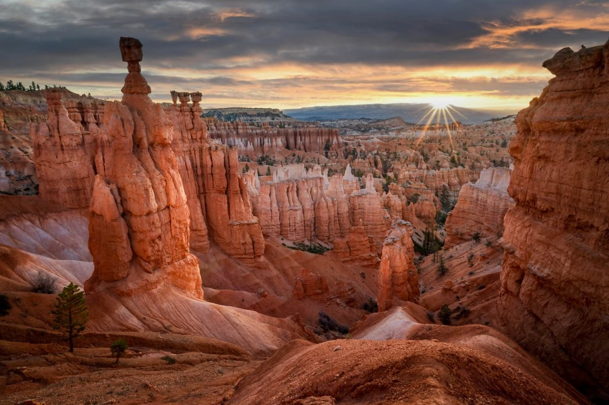

Bryce Canyon
National Park
Bryce Canyon is not really a canyon. It is a row of natural amphitheaters eaten into the edge of a plateau, filled with thousands of thin orange spires called hoodoos that stand packed together like a crowd.
Frost is what makes them. Water seeps into cracks in the limestone, freezes overnight and forces the rock apart, and Bryce runs through that freeze and thaw cycle around two hundred times a year. The landscape is still actively coming apart, losing roughly a foot and a half of rim every century. The Navajo Loop and Queen's Garden trails join into a three mile walk that drops down between the spires, which is the only way to understand how tall they really are.
We came here straight from Zion and the temperature difference was the first surprise. The park sits above 8,000 feet and the morning air had a real edge to it. Worth it: from Sunrise Point the light hits the top of the hoodoos first and works its way down, and the whole amphitheater turns over from grey to orange in a few minutes.
— Sunrise Point, about 6:40am